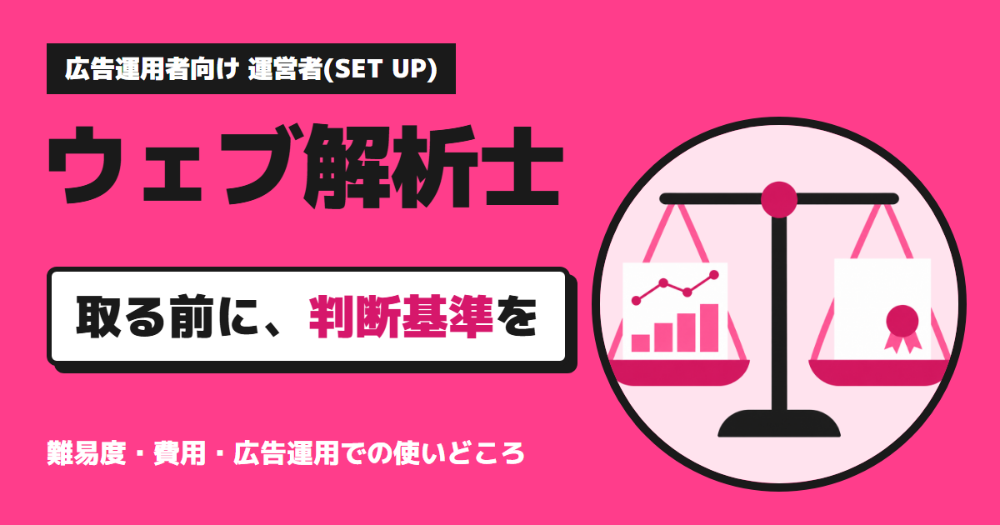

コラム ／ 広告運用
本記事にはアフィリエイト広告(A8.net)を利用したリンクが含まれます。リンク経由でお申し込みがあった場合、運営者(SET UP)が報酬を受け取ることがあります。紹介するサービスの選定と評価は、運営者の基準で行っています。
ウェブ解析士の難易度と、広告運用者に必要か。学習時間・費用・業務別の判断基準

ウェブ解析士の難易度を、協会が示す学習時間の目安と、協会の2025年度アンケート(654名)で整理します。合格率は協会が公表していないため、数字は載せません。2026年版の費用(税込、2026年11月24日に公式サイトで確認)、取る前に知っておきたい期待とのずれ、広告運用者に必要かを、業務別の判断基準として書きます。私は受講も受験もしていないため、体験談は書きません。
「ウェブ解析士 難易度」と検索すると、体験談が並びます。ただ、体験談は書いた人の経験や得意分野で、難しさの感じ方が変わります。広告の運用を仕事にしている人が知りたいのは、「自分の仕事にとって、費用と時間をかける価値があるか」のはずです。
この記事は、運用型広告の運用代行をしている運営者(SET UP)が、ウェブ解析士協会の公式情報を読んで整理した内容です。私は、ウェブ解析士の講座も試験も受けていません。そのため、体験談は書きません。書くのは、公式に確認できた事実と、広告運用者が判断するときの基準です。金額と仕様は、2026年11月24日に公式サイトで確認しました。金額は税込、2026年版です。
先に、数字の扱いを書いておきます。合格率は協会が公表していないため、「合格率は○%」とは書きません。学習時間は、協会が示す目安と、協会が資格保有者に行ったアンケートの結果を、出どころを添えて書きます。「私ならこう判断する」という部分は、事実ではなく私の見立てだと分かるように書き分けます。
結論:難易度の目安と、向いている人・急がなくてよい人
- 協会が示す学習時間の目安は、経験者で15〜30時間(1か月〜1か月半)、未経験者で40〜60時間(2〜4か月)。協会の2025年度アンケート(654名)では、難易度を「普通」とした人が45.0%で最多だった
- 合格率は協会が「現在公表しておりません」と答えている。ネットにある合格率の数字は、個人の集計で、公式ではない
- 費用は、2026年版で、講座なしの合計が22,000円、講座ありの合計が33,000円(税込、2026年11月24日に公式サイトで確認)。1月に内容が改訂されるため、取る年の検討は11月までに、と協会が案内している
- 広告運用者に必要かは、業務で決まる。GA4の設計とレポートを自分で担当し、考え方を体系で整理し直したい人は検討の余地がある。タグの実装など手を動かす作業が中心の人は、資格だけでは足りない
- GA4の操作だけを確かめたいなら、無料のGoogleの認定資格(Skillshop)が先の候補になる
取るかどうかの判断は、次の3つの問いで、当てはまる数を見る方法があります。これは公式の基準ではなく、私が考えた目安です。
- クライアントや社内に、数字の見方と施策の理由を、事業の目的から説明する場面が多いか
- 自分の知識が、実務の経験から断片的に身についたもので、全体を体系で整理し直したいと考えているか
- 学習に必要な時間と、費用(第4節)を、本業の時間や別の学習の時間より優先できるか
3つとも当てはまらない場合は、いま取らなくても困らない可能性が高いと、私は考えます。逆に、すべて当てはまるなら、公式サイトで講座の内容を確かめたうえで、検討してよい段階です。
ウェブ解析士とは(試験の形式と範囲)
ウェブ解析士は、一般社団法人ウェブ解析士協会(WACA、東京都新宿区)が認定する資格です。試験の形式と、2026年の主な条件は、次のとおりです(2026年11月24日に協会の公式サイトで確認)。
| 項目 | 内容 |
|---|---|
| 形式 | 4択60問・60分。ネットにつながるPCで、オンライン受験。会場はない |
| 受験の時期 | 協会が回ごとに受験期間を設ける。申し込んだ期間内なら、いつでも受けられる。合否は、試験の直後に画面に表示される |
| 出題 | 公式テキストに沿う。2026年版テキストから出題される。GA4の理解を問う問題があり、申し込みにはGoogleアカウントが要る |
| 試験中に使えるもの | 公式テキスト、講座スライド、計算機、自作メモ。生成AI、ネット検索、SNSでの質問は禁止で、行うと失格になる。テキストは受験用のPCでは開けないため、印刷するか、別の端末で見る |
| 2026年の変更 | Safe Exam Browserと、Webカメラ付きのPCが必須になった(カメラは2026年9月4日以降の試験から) |
| 合格基準 | 非公開 |
出題範囲は、公式テキストの全8章です。基本指標、事業戦略、デジタル化戦略、解析設計、インプレッション、エンゲージメント、オウンドメディア、レポーティングの順に並んでいます。2025年版から、生成AIの活用と評価も範囲に入りました。
章の名前を見ると、GA4など個別のツールの操作というよりも、事業の目的から、何を測り、どう報告するかという流れに沿った構成になっていることが読み取れます。これは章題から私が読み取ったことで、各章の中身の深さまでは確かめていません。
受験の条件
講座は任意で、試験だけを申し込むことができます。講座に、試験は含まれません。一方、公式テキストは受験に必要です。「独学で受けられる」とは言えますが、「テキストなしで受けられる」とは言えません。
難易度:学習時間の目安と、合格率の読み方
協会が示す学習時間の目安
協会の公式サイトは、学習時間の目安を、次のように示しています。
| 対象 | 期間の目安 | 時間の目安 |
|---|---|---|
| 経験者 | 1か月〜1か月半 | 15〜30時間 |
| 未経験者 | 2〜4か月 | 40〜60時間 |
広告運用者は、この分け方で言うと「経験者」に近い人が多いと、私は考えます。ただ、運用経験があっても、テキストの全8章のうち、事業戦略やデジタル化戦略のような上流の章は初めて読む、という人もいると思います。どちらの欄に近いかは、公式テキストの目次を見て、自分で見積もってください。
協会のアンケートに見る、難易度の感じ方
協会は、資格保有者に対するアンケートの結果を公開しています。協会の2025年度アンケート(654名)では、次の結果でした。
- 難易度は「普通」が45.0%で最多
- 63.3%が、1か月以内に学習を終えた
- 平均の学習時間は約25時間
- 「2週間・15〜30時間」が40.8%で最多
この数字を読むときの注意が2つあります。1つ目は、対象が「資格を保有している人」であることです。資格を取れなかった人や、途中でやめた人の声は、この数字に入りません。2つ目は、協会が行った調査である点です。この結果について、第三者による検証は確認できませんでした。目安の一つとして読み、「自分も同じ時間で終わる」とは受け取らないでください。
合格率は非公表。ネットの数字の読み方
合格率について、協会は「現在公表しておりません」と答えています。合格基準も非公開です。
それでも、ネットでは「合格率は○%」という数字を見かけます。これらは、書いた人が、集めた範囲で集計した個人の数字で、公式の発表ではありません。何人を、どの期間で、どう数えたのかが分からない数字は、判断の根拠にしないほうがよいと、私は考えます。この記事でも、特定のサイトの数字は、引用しません。
また、協会の古い記事に、過去の年の合格率を載せたものが残っていることがあります。古い年の数字で、今の試験にそのまま当てはまるとは限らないため、使いませんでした。
難易度を判断する材料は、合格率ではなく、次の3つに絞るのが現実的です。協会が示す学習時間の目安、協会のアンケート、そして、公式テキストの目次を自分で見ての感触です。
取得にかかる費用(2026年版)
費用は、協会の公式サイトに載っている金額を、次の表にまとめました。税込、2026年版、2026年11月24日に公式サイトで確認した金額です。カリキュラムは1〜12月の年度で動いていて、1月に改訂されます。そのため、2027年1月以降の金額は、この表と違う可能性があります。申し込む前に、公式サイトで確認してください。
| 項目 | 金額(税込) | 補足 |
|---|---|---|
| 受験料(認定費用込み) | 17,600円 | 試験のみ |
| 認定講座(オンデマンド) | 11,000円 | 動画約24.5時間・問題183問。受講は2026年12月31日まで。任意 |
| 公式テキスト(2026年版・第17版・PDF) | 4,400円 | 受験に必要 |
| 合計(講座なし) | 22,000円 | 受験料+テキスト |
| 合計(講座あり) | 33,000円 | 受験料+講座+テキスト |
| 再受験(同じ年度内) | 12,100円 | 不合格から14日後に、クーポンで申し込む。翌年度は、新規と同じ17,600円 |
| 年会費(正会員) | 6,600円 | 資格を取得して入会した年は免除 |
認定講座は、2026年版の受講期限が2026年12月31日までです。協会は、その年に取るなら11月までに検討するよう勧めています。2026年11月24日に確認した時点で、期限まで1か月余りです。2026年版で受けるか、1月の改訂後の内容に切り替えるかは、早めに決めてください。
資格を維持するための費用と手間
資格は、取ったあとも、維持する条件があります。協会の案内では、次の2つです。
- 毎年、翌年度の年会費を、前年の中に払う(2027年分は、2026年12月25日の15時まで)
- フォローアップテストに合格する(無料。何度でも受けられる。毎年12月25日まで。資格を取得した年は不要)
この条件を満たさないと、資格を失い、受け直しになります。正会員になっている間は、公式テキストが毎年無料で手に入ります。資格を維持するかどうかは、後ろの第7節の費用の考え方に、年会費として入れてください。
2027年版の予定
協会は、2027年版の内容を、経済産業省とIPAの「DXリテラシー標準(DSS-L)」に合わせて改める予定だと発表しています。テキストは、本編10章と別冊になる予定です。協会は、この変更について、「経済産業省・IPAによる個別認定・認証を意味しません」と明記しています。この資格が国や省庁の認定になるという意味ではありません。
2027年の試験の形式、時間、受験料、日程は、私が確認した時点では分かっていませんでした。2027年に取る予定なら、公開される情報を、公式サイトで直接確認してください。
講座と試験の内容は、協会のページ(ウェブ解析士 、広告)で確認できます。
、広告)で確認できます。
取る前に知っておきたい、期待とのずれ
資格に何を期待するかによって、取ったあとの満足は変わります。期待とのずれが生まれやすいところを、いくつかに分けて考えます。ここからは、公式の事実と、私の見立てを分けて書きます。
1. 試験の形式が、実務の操作とは別のもの(事実から見えること)
試験は、4択60問のオンライン試験です。形式の面から言うと、GA4の管理画面を実際に操作して設定する試験ではありません。出題にはGA4の理解を問う問題が含まれますが、管理画面での操作を確かめる形式ではない、という点は、期待とのずれが生まれやすいところだと、私は考えます。
2. 資格があることと、成果が出ることは、別(私の見立て)
どの資格にも言えることですが、持っていることと、仕事の成果は、別のものです。資格で身につくのは、知識を整理した形や、説明に使う共通の言葉であって、広告の成果を保証するものではありません。資格に、成果を保証する働きを期待すると、ずれが生まれやすいと、私は考えます。
3. 取ったあとの維持の手間(事実から見えること)
第4節のとおり、資格を維持するには、毎年の年会費と、フォローアップテストが必要です。取ったあとの手間を、想定していなかった人は、負担に感じるかもしれません。
4. 内容が毎年変わり、2027年版は改められる予定(事実から見えること)
カリキュラムは1月に改訂され、2027年版は、DXリテラシー標準に合わせた内容に改められる予定です。知識の鮮度を保つ意味では良い面がありますが、取った年のテキストの知識が、そのまま長く通用するとは限りません。
見方:誰にとっての「役に立つ」かで決まる
「役に立つ」は、人によって意味が違います。たとえば、次のような区別ができます。
- 実務のスキルを上げたい → 手を動かす練習と、現場の経験のほうが、直接の近道になることが多いと、私は考えます
- 知識を体系で整理したい、人に説明する言葉をそろえたい → 公式テキストの構成は、その目的に合う可能性があります
- 肩書きで信頼を得たい → 資格名が、取引先に通じるかは、相手によります。私は、この点について確かな根拠を持っていません
どれを求めているのかを決めてから、取るか判断するのが、納得しやすい順番だと思います。
広告運用者に必要か:業務別の判断基準
ここでは、広告運用者の仕事を、GA4の設計、計測の整備、レポート、提案の4つに分けて、「公式テキストの範囲で足りること」と「資格だけでは足りないこと」を整理します。これは断定ではなく、判断のための基準です。私は講座も試験も受けていないため、テキストの中身の深さまでは確かめていません。章の名前と、試験の形式から言えることだけを書きます。
| 業務 | 公式テキストの範囲で足りそうなこと | 資格だけでは足りないこと | 判断の目安 |
|---|---|---|---|
| GA4の設計(何を測るか、どう分けるか) | 「解析設計」の章がある。事業の目的から、測る指標を決める考え方の整理に使えると考えられる | 4択の試験なので、管理画面で実際に設定する手順は、試験では確かめられない。個別のクライアントの事情に合わせた設計は、経験で補う | 設計の考え方を体系で見直したいなら検討の余地あり。操作を覚えたいだけなら、無料のGoogleの資格(第8節)と、実際の画面での練習が先 |
| 計測の整備(タグ、コンバージョンの実装と検証) | 「基本指標」「解析設計」の章で、何を計測するかの前提は整理できると考えられる | タグの実装や、計測が正しく動いているかの検証は、4択では確かめられない。広告媒体ごとの設定は、各媒体の公式ヘルプで確認する | この業務が中心なら、資格の優先度は低いと、私は考える。実務の経験と、公式ヘルプの確認が主になる |
| レポート(報告の作り方、数字の読み方) | 「レポーティング」の章がある。報告の型や、数字を何と比べるかの整理には使えると考えられる | クライアントごとの目標の置き方や、媒体の管理画面とGA4で数字の定義が違う点の読み解きは、各ツールの公式ヘルプと、実務の経験で補う | 報告の型を持っていない人や、説明に自信がない人は、検討の余地あり |
| 提案(施策の選び方、優先順位) | 「事業戦略」「デジタル化戦略」の章がある。事業の目的から施策を位置づける言葉を、持てると考えられる | 提案の中身(予算の置き方、媒体の選び方、クリエイティブ)は、広告の運用経験が決める。資格では身につかない | 事業会社の担当者に、目的から説明する場面が多いなら検討の余地あり |
この表の使い方は、自分の仕事のうち、時間が多くかかっている業務の行を、まず見ることです。たとえば、レポートと提案に多くの時間を使っているなら、「足りそうなこと」の欄が自分の悩みと重なるかを見ます。計測の整備が中心なら、資格より先に、実務で確かめる項目のほうが多いと分かります。
私自身は、運用代行をする立場で、クライアントとの会話では、資格の有無より、数字をどう読み、次に何をするかを説明できることのほうが大切だと考えています。これは私の考えで、資格を取らない理由にも、取る理由にもなりません。取るなら、「何のために」を決めてから取るのがよい、というのが私の立場です。
費用を回収できるかの考え方
費用を回収できるかどうかは、人によって変わります。この記事では、数字の例は作りません。自分の数字を入れるための、計算式だけを示します。
得られる効果の合計 = 資格をきっかけに増えた粗利 + 資格で短縮できた作業時間 × 自分の時間単価
回収に要する期間 = かかる費用の合計 ÷ 得られる効果の、1か月あたりの金額
式に入れる、公式の金額と時間は、次のとおりです。
- 受験料17,600円、テキスト4,400円、講座11,000円(任意)。年会費は6,600円で、取得した年は免除(第4節、税込、2026年版)
- 学習時間は、協会の目安で、経験者が15〜30時間、未経験者が40〜60時間(第3節)
- 時間単価は、自分の数字を入れる。学習に使う時間を、本業に使えば得られたはずの金額として考える
式で難しいのは、右側の「得られる効果」です。資格をきっかけに増えた粗利は、資格が原因だったのかを、後から切り分けにくいからです。そこで、効果を、資格を持っていることで見込む金額としてではなく、業務で実際に省ける時間や、取れなくなっていた案件に対応できるかで考えると、数字を置きやすくなると思います。資格を取れば仕事が増える、とは、私には言えません。
式を埋めて、効果が見込めないとき、あるいは見込む数字に自信がないときは、取らない選択も、合理的です。
GoogleのGA4認定資格との使い分け
GA4の資格には、Googleが提供するものもあります。Skillshopで受けられる「Google アナリティクス 4 認定資格」で、公式のヘルプで確認できたのは、次の範囲です(2026年11月24日確認)。
- コースは4つ(101、102、201、301)と、認定資格が1つ
- 無料
- 受験回数の制限はない。不合格のときは、24時間後に再受験できる
- 有効期間は、認定日から1年。再認定は、期限の30日前から受けられる
- Skillshopのサイトは、日本語に対応している
一方で、試験そのものが日本語で受けられるか、問題数、制限時間は、公式で確認できなかったため、この記事では書きません。受ける前に、Skillshopで直接確認してください。
使い分けの考え方
2つの資格は、提供元も、範囲も、費用も、有効期間も違います。違いを、公式で確認できる範囲で並べます。
| 項目 | ウェブ解析士 | Google アナリティクス 4 認定資格 |
|---|---|---|
| 提供元 | ウェブ解析士協会 | Google(Skillshop) |
| 費用 | 講座なし22,000円、講座あり33,000円(税込、2026年版) | 無料 |
| 範囲 | 公式テキスト全8章(事業戦略、解析設計、レポーティングなど。GA4の理解を問う問題を含む) | コース4つと認定資格1つ(GA4) |
| 有効期間・維持 | 毎年の年会費(翌年度分を前年中に払う。取得して入会した年の分は免除)と、フォローアップテスト(取得した年は不要) | 認定日から1年。期限の30日前から再認定 |
| 不合格のとき | 同年度内は、14日後に12,100円で再受験 | 24時間後に再受験。回数の制限なし |
使い分けは、次のように考えるのが、私の立場です。GA4の機能と使い方を、費用をかけずに確認したいなら、Googleの認定資格が先です。費用がかからず、何度でも挑戦できるため、試す価値があります。そのうえで、事業の目的から測る指標を決めることや、報告のしかたまで、体系で整理したいと考えたときに、ウェブ解析士を検討する、という順番です。これは私の考えで、どちらが上かを決めるものではありません。
上位資格(上級ウェブ解析士・ウェブ解析士マスター)
ウェブ解析士には、上位の資格もあります。いずれも、公式サイトで確認した内容を、短く書きます。
- 上級ウェブ解析士:ウェブ解析士の保有者が対象。88,000円(受験料込み)。課題と修了レポートで評価され、200点中140点以上(足切りあり)。約2.5〜3か月・40〜60時間が目安。再提出は、1つにつき11,000円、全部で22,000円
- ウェブ解析士マスター:上級ウェブ解析士に加えて、正会員か法人会員であることが条件。220,000円。再試験は、1つにつき33,000円
どちらも、まず、ウェブ解析士を取るところが入口です。広告運用者が最初に迷うのは、ここではないため、上位資格については、費用と条件だけを知っておけば、足りると思います。
よくある質問
- 独学で受けられますか。
- 講座は任意で、試験だけを申し込めます。ただし、公式テキストは受験に必要です。テキストなしでは受けられません。
- 試験中に、生成AIやネット検索は使えますか。
- 禁止されていて、行うと失格になります。使えるのは、公式テキスト、講座スライド、計算機、自作メモです。
- 会場に行く必要はありますか。
- 会場はありません。ネットにつながるPCで、オンラインで受験します。2026年は、Safe Exam BrowserとWebカメラ付きのPCが必須です。
- 不合格のときは、いくらかかりますか。
- 同じ年度内は、不合格から14日後に、クーポンで12,100円で再受験できます。翌年度は、新規と同じ17,600円です(いずれも税込、2026年版)。
- 合格率や合格ラインは、いくつですか。
- 協会は、合格率を公表していません。合格基準も非公開です。ネットの数字は、個人の集計で、公式ではありません。
- 1月から勉強を始めても、間に合いますか。
- カリキュラムは1〜12月の年度で、1月に改訂されます。協会は、その年に取るなら11月までに検討するよう案内しています。受験期間と締切は、回ごとに決まるため、公式サイトで確認してください。
- 2027年は、何が変わりますか。
- 内容を、DXリテラシー標準(DSS-L)に合わせて改める予定で、テキストは本編10章と別冊になる予定です。形式、時間、受験料、日程は、私が確認した時点では分かっていません。
- この資格は、国の認定ですか。
- 協会は、「経済産業省・IPAによる個別認定・認証を意味しません」と明記しています。協会が認定する資格です。
まとめ
- 難易度は、合格率ではなく、協会が示す学習時間の目安(経験者15〜30時間、未経験者40〜60時間)と、協会の2025年度アンケート(654名)で見る。合格率は非公表で、ネットの数字は公式ではない
- 費用は、2026年版で講座なし22,000円、講座あり33,000円(税込、2026年11月24日に公式サイトで確認)。維持には、年会費とフォローアップテストがかかる。1月に改訂される
- 広告運用者に必要かは、業務で決まる。レポートと提案、GA4の設計の考え方を体系で整理したい人は検討の余地がある。計測の整備のように手を動かす業務が中心なら、資格より実務の確認が先
- GA4の使い方を、費用をかけずに確かめたいなら、無料のGoogleの認定資格が先の候補
- 回収できるかは、第7節の式に、自分の数字を入れて判断する。見込めないなら、取らない選択もある
もし取ると決めたら、申し込む前に、公式サイトで、受験期間、金額、2027年版の予定を、最新の情報で確かめてください。この記事の金額は2026年11月24日に確認したもので、1月の改訂で変わる可能性があります。
受験の申し込みや講座の案内は、協会のページ(ウェブ解析士認定資格 、広告)から確認できます。金額と受験期間は、申し込む前に、必ず最新の案内で確かめてください。
、広告)から確認できます。金額と受験期間は、申し込む前に、必ず最新の案内で確かめてください。
参考文献(公式)
いずれも2026年11月24日に確認しました。金額と日程は変わるため、申し込む前に、最新の公式ページで確かめてください。
ウェブ解析士協会
- ウェブ解析士 認定試験・認定講座の案内、オンデマンド講座(2026年版)
- 受験の案内(受験期間)、受験のルール(2026年)
- よくある質問:学習時間と合格率、よくある質問:資格保有者アンケート、よくある質問:合格基準
- よくある質問:費用、よくある質問:再受験、よくある質問:年会費、よくある質問:資格の維持
- 2027年版の予定(お知らせ)、資格の維持に関するお知らせ
- 上級ウェブ解析士、ウェブ解析士マスター
- 協会の概要